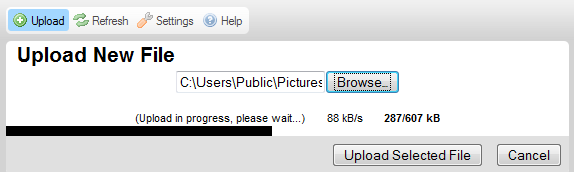

Tla膷铆tko Nahr谩t (Upload), kter茅 je dostupn茅 v CKFinder na Panelu n谩stroj暖 otev艡e Panel Nahr谩v谩n铆, kter媒 m暖啪ete pou啪铆t pro p艡id谩n铆 nov媒ch soubor暖 do sou膷asn茅 slo啪ky.
Obr谩zek n铆啪e p艡edstavuje standardn铆 Panel nahr谩v谩n铆 v pr暖zkumn铆ku soubor暖, kter媒 je rozbalen p艡i kliknut铆 na tla膷铆tko panelu n谩stroj暖.
Abyste zav艡eli (sbalili) Panel nahr谩v谩n铆, stiskn臎te tla膷铆tko Zru拧it (Cancel) (pokud jste je拧t臎 nespustili proces nahr谩v谩n铆) nebo tla膷铆tko Zav艡铆t (Close). M暖啪ete tak茅 kliknout znovu na tla膷铆tko Nahr谩t (Upload).
Pozn谩mka: Nahr谩v谩n铆 je technick媒 term铆n, kter媒 znamen谩 膷innost pos铆l谩n铆 soubor暖 z Va拧eho m铆stn铆ho po膷铆ta膷e do centr谩ln铆ho (tak茅 zn谩m jako server).
Panel nahr谩v谩n铆 CKFinder existuje ve dvou verz铆ch, v z谩vislosti na Va拧em prost艡ed铆. Standardn臎 je verze pro v铆ce nahr谩v谩n铆 (kter谩 V谩m umo啪n铆 nahr谩t v铆ce soubor暖 na server najednou) pou啪ita pro v拧echny prost艡ed铆, kter谩 podporuj铆 Adobe Flash. Pokud ale V谩拧 m铆stn铆 syst茅m Flash nepodporuje, budete st谩le m铆t mo啪nost nahr谩t jednotliv茅 soubory v odd臎len媒ch operac铆ch d铆ky z谩lo啪n铆 verzi.
Obr谩zek v媒拧e p艡edstavuje v媒choz铆 Panel nahr谩v谩n铆, kter媒 m谩 umo啪n臎no nahr谩vat v铆ce soubor暖 najednou. Pro v拧echny syst茅my, kter茅 Flash nepodporuj铆 (v膷etn臎 n臎kter媒ch mobiln铆ch prohl铆啪e膷暖) bude pou啪it n谩sleduj铆c铆 form谩t Panelu nahr谩v谩n铆.

Standardn臎 V谩m CKFinder umo啪n铆 nahr谩t n臎kolik soubor暖 najednou. Abyste odeslali soubory na server, postupujte podle krok暖 popsan媒ch n铆啪e.
Krok 1: Klikn臎te na tla膷铆tko Nahr谩t (Upload) na panelu n谩stroj暖 pro otev艡en铆 Panelu nahr谩v谩n铆.
Krok 2: Kdy啪 je Panel nahr谩v谩n铆 rozbalen, klikn臎te na tla膷铆tko P艡idat soubory (Add Files). Otev艡e se dialogov茅 okno v媒b臎ru soubor暖 Va拧eho opera膷n铆ho syst茅mu, kter茅 V谩m umo啪n铆 vybrat m铆stn铆 soubor k nahr谩n铆 na server.
Pozn谩mka: M暖啪ete vybrat tolik soubor暖, kolik chcete t铆m, 啪e je v拧echny najednou vyberte v dialogov茅m okn臎.
Krok 3: M铆stn铆 soubor(y) bude nyn铆 p艡id谩n do fronty nahr谩v谩n铆. Pokud chcete p艡idat dal拧铆 soubory do tohoto bal铆膷ku pro nahr谩v谩n铆, klikn臎te znovu na tla膷铆tko P艡idat soubory (Add Files) a zopakujte kroky popsan茅 v媒拧e.

Krok 4: Pokud si rozmysl铆te, kter茅 soubory na server nahr谩t, m暖啪ete v啪dycky jednotliv茅 soubory odstranit z fronty nahr谩v谩n铆 kliknut铆m na tla膷铆tko Odstranit (Remove) vedle souboru, nebo se rozhodnete zru拧it cel媒 proces nahr谩v谩n铆 zvolen铆m tla膷铆tka Zru拧it (Cancel) na Panelu nahr谩v谩n铆.
Krok 5: Pokud jste hotovi s procesem v媒b臎ru soubor暖, m暖啪ete kliknout na tla膷铆tko Nahr谩t (Upload) pro spu拧t臎n铆 nahr谩v谩n铆. Postup cel茅ho procesu a tak茅 jednotliv媒ch soubor暖 m暖啪ete pozorovat na obrazovce.

Krok 6: Po膷kejte na ukon膷en铆 nahr谩v谩n铆. Jakmile bude dokon膷eno, obsah slo啪ky bude obnoven a nahran媒 soubor bude vybr谩n v Panelu soubor暖.
Kdy啪 Adobe Flash nen铆 na Va拧em syst茅mu dostupn媒, nahr谩v谩n铆 CKFinder bude pln臎 funk膷n铆, bude ale omezeno na jeden soubor najednou. Abyste odeslali soubory na server, postupujte podle krok暖 popsan媒ch n铆啪e.
Krok 1: Klikn臎te na tla膷铆tko Nahr谩t (Upload) na panelu n谩stroj暖 pro otev艡en铆 Panelu nahr谩v谩n铆.
Krok 2: Kdy啪 je Panel nahr谩v谩n铆 rozbalen, klikn臎te na tla膷铆tko P艡idat soubory (Browse). Otev艡e se dialogov茅 okno v媒b臎ru soubor暖 Va拧eho opera膷n铆ho syst茅mu, kter茅 V谩m umo啪n铆 vybrat m铆stn铆 soubor k nahr谩n铆 na server.
Pozn谩mka: N谩zev tla膷铆tka se m暖啪e v r暖zn媒ch prohl铆啪e膷铆ch li拧it.
Krok 3: M铆stn铆 soubor bude nyn铆 p艡id谩n. M暖啪ete nahr谩vat pouze jeden soubor najednou.
Krok 4: Pokud jste hotovi s procesem v媒b臎ru souboru, m暖啪ete kliknout na tla膷铆tko Nahr谩t zvolen媒 soubor (Upload Selected File) pro spu拧t臎n铆 nahr谩v谩n铆. Postup procesu nahr谩v谩n铆 souboru m暖啪ete pozorovat na obrazovce.

Krok 5: Po膷kejte na ukon膷en铆 nahr谩v谩n铆. Jakmile bude dokon膷eno, Panel nahr谩v谩n铆 bude uzav艡en, obsah slo啪ky bude obnoven a nahran媒 soubor bude vybr谩n v Panelu soubor暖.
P艡i nahr谩v谩n铆 soubor暖 se mohou objevit n谩sleduj铆c铆 chyby.
Tato zpr谩va nazna膷uje, 啪e n谩zev nahr谩van茅ho souboru je ji啪 pou啪铆v谩n铆m jin媒m souborem ve stejn茅 slo啪ce. Aby nedo拧lo ke konfliktu, bylo k p暖vodn铆mu n谩zvu p艡ipojeno po艡adov茅 膷铆slo "(1)".
Soubor, kter媒 jste se pokusili nahr谩t, nebyl p艡ijat.
Nejb臎啪n臎j拧铆 p艡铆膷ina t茅to zpr谩vy je, 啪e CKFinder byl nastaven, aby nep艡ij铆mal druh souboru, kter媒 se sna啪铆te nahr谩t, na z谩klad臎 jeho p艡铆pony. Toto je bezpe膷nostn铆 omezen铆. Je tak茅 mo啪n茅, 啪e velikost souboru je pro V谩拧 syst茅m p艡铆li拧 velk谩. Pokud tomu tak je, server mus铆 b媒t nastaven pro p艡ijet铆 v臎t拧铆ch soubor暖.
Nahr谩van媒 soubor obsahuje HTML k贸d. Z bezpe膷nostn铆ch d暖vod暖 pouze soubory s vybranou p艡铆ponou mohou obsahovat k贸d HTML.
Pros铆m kontaktujte Va拧eho spr谩vce syst茅mu pro z铆sk谩n铆 v铆ce informac铆 ohledn臎 p艡ij铆man媒ch typ暖 soubor暖 a jejich dovolen媒ch velikost铆.